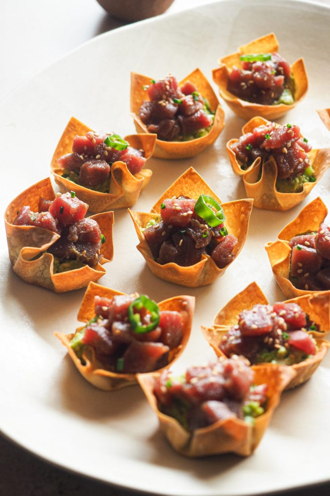

Presentación
El término masas de atún suele referirse a dos conceptos principales según el contexto gastronómico o comercial: la mezcla preparada para elaborar platillos caseros o los cortes específicos de pescado para hostelería.

Historia
La historia de las masas de atún es un viaje global de intercambio cultural, técnicas de fritura y avances industriales.
Las masas rellenas de atún, como la empanada gallega y las empanadillas, tienen su origen en la península ibérica (España) y se remontan a la Edad Media, con influencias de las culturas sefardí y árabe.
Los ingredientes son:
- 300 g de harina
- 150 g de manteca (mantequilla fría)
- 1 cucharadita de sal
- 1/2 vaso de agua fría
Aquí puedes encontrar la información nutricional:
- Calorías: 380 Kcal
- Carbohidratos: 28 g
- Proteínas: 15 g
- Grasas totales: 23 g
- Grasas saturadas: 11 g
- Fibra: 1.5 g
- Sodio: 480 mg
Aquí te guiamos paso a paso la preparación de la receta:
- En un bol mezcla la harina con la sal y agrega la manteca fría cortada en cubos pequeños para deshacerla con las yemas de los dedos hasta formar un arenado fino sin transmitirle demasiado calor.
- Vierte el agua fría poco a poco y une los ingredientes sin amasar en exceso hasta lograr una masa homogénea.
- Divide la masa en dos partes dejando una ligeramente más grande para la base, envuélvelas en papel film y déjalas descansar en la heladera durante .
- Pica finamente la cebolla junto con el morrón rojo y el morrón verde para luego rehogarlos en una sartén con un chorrito de aceite a fuego medio hasta que queden tiernos y transparentes.
- Agrega la sal y el pimentón dulce, espolvorea la cucharada de harina cocinándola por e incorpora la crema de leche revolviendo constantemente hasta que la mezcla espese ligeramente.
- Retira la sartén del fuego para integrar el atún escurrido y desmenuzado con los huevos duros picados y deja enfriar este relleno por completo.
- Retira los bollos de la heladera, estira el más grande con un palo de amasar y colócalo sobre un molde para tarta previamente enmantecado y enharinado.
- Vuelca encima el relleno frío distribuyéndolo de manera uniforme por toda la base.
- Estira el segundo bollo de masa para cubrir la tarta, une los bordes haciendo un repulgue para sellarla bien y pincha la tapa con un tenedor para que salga el vapor durante la cocción.
- Pincela toda la superficie con el huevo batido y cocínala en un horno precalentado a ciento ochenta grados durante a , hasta que la masa esté bien dorada.
Aquí te dejamos algunos consejos para la receta:
Consejo para que la masa te quede crocante
Asegúrate de que la manteca y el agua estén extremadamente frías. Si la masa se calienta durante el armado, la manteca se derretirá antes de entrar al horno y perderá esa textura hojaldrada tan característica.
Consejo para que la base no quede húmeda
Es fundamental que el relleno esté completamente frío antes de ponerlo sobre la masa. Si lo pones caliente, el vapor ablandará la base y quedará una textura pastosa en el fondo.
Consejo para que te varíe el sabor
Puedes añadir un puñado de aceitunas verdes picadas o una cucharadita de comino al relleno junto con el atún para darle un toque de sabor más intenso.
El truco del reposo
Si notas que la masa se encoge al estirarla, déjala descansar sobre la mesada. Esto relaja el gluten y te permitirá estirarla sin que se deforme.
Aquí podrás observar con qué puedes acompañar la receta:
Guarniciones frescas y ligeras
- Ensalada de hojas verdes y cítricos: Mezcla de lechuga, rúcula y espinaca fresca con gajos de naranja o toronja. El toque ácido corta perfectamente la suntuosidad de la manteca y la crema de la tarta.
- Ensalada griega simplificada: Cubos de pepino, tomates cherry, cebolla morada y aceitunas negras con un chorrito de aceite de oliva y limón. Aporta una textura crujiente espectacular.
- Ensalada de zanahoria e hinojo rallados: Aliñada con una vinagreta ligera de mostaza. Es un acompañamiento refrescante y con un toque dulce que resalta el sabor del atún.
Guarniciones calientes y reconfortantes
- Vegetales asados al horno: Bastones de calabacín, berenjena, zanahoria y cebolla con hierbas aromáticas (como tomillo u orégano). Se pueden cocinar en el horno al mismo tiempo que la tarta.
- Sopa o crema ligera de entrada: Una taza de crema de calabaza (auyama), tomate o espárragos antes de servir la tarta es ideal para los días más frescos.